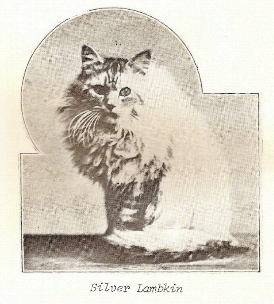
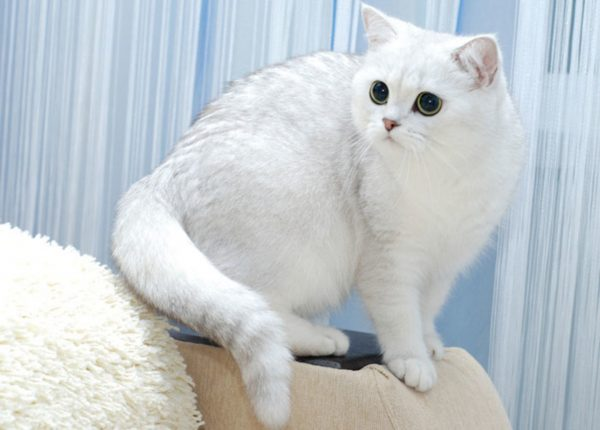
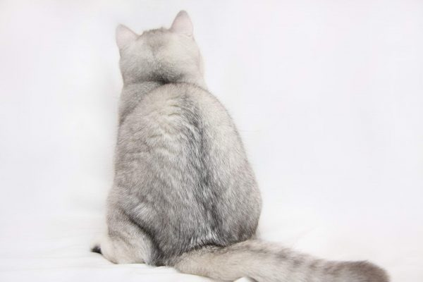
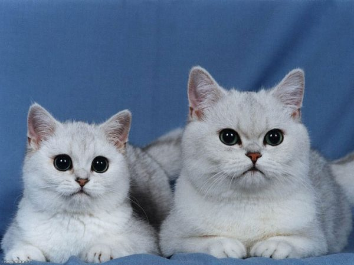
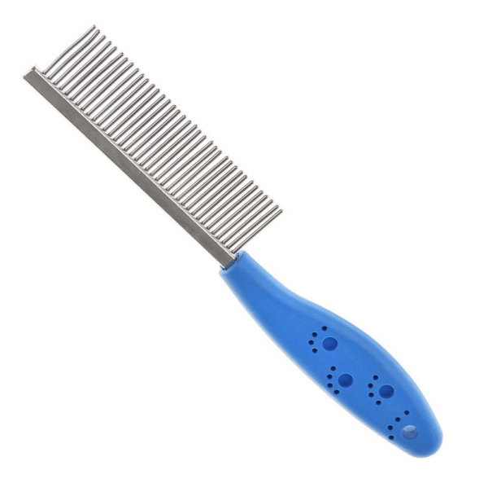

1. История возникновения британской шиншиллы
Самый первый котёнок британской породы с необыкновенной шубкой появился на территории Великобритании в 1882 году. Кошечка по кличке Шинни родилась в результате скрещивания персидской кошки и британца дымчатого окраса. Дальнейшая планомерная племенная работа по стабилизации интересного окраса привела к появлению в 1889 году кота по кличке Сильвер Ламбкин, который считается официальным родоначальником британских шиншилл. Именно он позднее стал победителем и чемпионом многочисленных международных кошачьих выставок.
Некоторое время селекционеры пытались добиться яркого изумрудно-зелёного окраса глаз у шиншилловых кошек, скрещивая их с другими зеленоглазыми однородно окрашенными породами. Но прилив чужеродной крови крайне негативно сказался на окрасе шерстяного покрова полученного потомства, поэтому дальнейшая работа велась только внутрипородным скрещиванием с редким добавлением персидской крови.
2. Описание британской шиншиллы
Все основные породные характеристики у шиншиллы соответствуют стандарту короткошёрстной британской кошки. Отличие состоит лишь в великолепном и необычном мехе.
2.1 Внешний вид
Британские шиншиллы обладают довольно крупным телом с широкой грудиной, прямой спиной и хорошо сформированными бёдрами. Телосложение у них мощное, немного приземистое с отлично развитой мускульной системой.
 Стандартные породные характеристики описываются следующим образом:- округлой формы крупная голова с широковатым лбом и аккуратной скруглённой мордочкой с широкими скулами и выраженными круглыми щеками;
- нос широкий, короткий и прямой, зеркальце носа розового или кирпичного окраса;
- скруглённые на концах ушки небольшого размера расставлены широко друг от друга;
- шея короткая, толстая и мускулистая;
- глаза большие и круглые, посажены не глубоко и не очень далеко, цвет приветствуется насыщенный изумрудно-зелёный, но встречаются голубоглазые и желтоглазые особи;
- хорошо развитые мускулистые конечности пропорциональны, но коротковаты, отчего кошки кажутся приземистыми;
- лапы круглые, толстые и крупные, с пучками шерсти между пальцами;
- хвост не очень длинный, толстый, со скруглённым кончиком;
- вес: самец — 5–8 кг, самка — 3–4 кг (кастрированные или стерилизованные особи могут достигать 10–12 кг).
Шерстяной покров у британских шиншилл плотный, короткий и густой, к телу не прилегает, подшёрсток хорошо развитый.
2.2 Характер
Британские шиншиллы отличаются независимостью и самодостаточностью. К человеку кошка привязывается, но искренне считает себя ему ровней. Она чрезвычайно спокойна и уравновешена, всегда сохраняет позицию наблюдателя и старается без необходимости не вмешиваться в дела окружающих. Но наблюдение за происходящим входит в круг её непосредственных обязанностей.
Сделать из британца живую плюшевую игрушку не получится. Все эмоциональные сюсюканья, тисканья и принудительные ласки животное переносит стоически с присущей для этой породы снисходительностью и хладнокровием. В центре внимания питомец быть не любит и не приемлет никакого насилия над собственной личностью. Заставить его сделать то, что он не хочет, абсолютно невозможно. Упрямства и свободолюбия этой породе занимать не придётся. Но приложив небольшое усилие и толику хитрости, хозяин всегда способен достичь поставленной цели.
3. Содержание британской шиншиллы
Правильно содержать британскую шиншиллу очень непросто и нужно внимательно оценить собственные возможности, прежде чем заводить такого питомца.
3.1 Питание
Кормить шиншиллу можно натуральной едой и готовым кормом фабричного изготовления. Все корма должны содержать не менее 30–35% протеина.
3.1.1 Количество и состав пищи
В качестве готовых магазинных составов рекомендуется использовать профессиональные сухие корма премиум и суперпремиум класса, которые предназначены для кошек персидских и британских пород (Royal Canin, Hills, Sanabelle Bosch, Pro Plan и пр.). Расчёт суточной дозы следует производить из соотношения 70 ккал на 1 кг живого веса.
В натуральное меню включают следующие продукты:- сырое постное мясо (крольчатина, индюшатина, телятина и пр.);
- субпродукты отварные (печень, лёгкие, сердце, почки и пр.);
- морская рыба варёная, очищенная от костей;
- нежирные кисломолочные продукты (сметана, кефир, несладкий йогурт, творог);
- яйца, предпочтительнее перепелиные (не чаще двух раз в неделю);
- нерафинированное растительное масло (½ ч. л. в день);
- отварные овощи (кабачки, морковь, капуста и пр.);
- крупяные каши (ячневая, гречневая, рисовая, овсяная и т. п.).
3.1.2 Сколько раз в день кормить питомца
Британцы склонны к перееданию и, как следствие, к ожирению. Меры в еде они не знают, поэтому разовые дозы корма нужно всегда точно отмерять, а недоеденные остатки стразу убирать. Кормить их нужно маленькими порциями и не чаще 2–3 раз в день. Питание маленьких котят состоит из 5–6 приёмов пищи. Постепенно число кормлений сокращают и к году переходят на взрослый режим.
3.1.3 Роль сбалансированного рациона в здоровье кота
Для шиншилл крайне важно сбалансированное и правильно подобранное питание, поскольку это напрямую сказывается на их внешнем виде и качестве шерсти. При натуральном рационе нужно обязательно давать питомцам специальные витаминно-минеральные комплексы. При использовании готовых кормов в этом нет необходимости, так как они в своём составе уже содержат все необходимые для нормальной жизнедеятельности кошек компоненты.
3.2 Уход за внешностью
Грамотный уход за внешностью шиншилл включает в себя несколько необходимых мероприятий, которые обязательно нужно знать и строго соблюдать.
3.2.1 Вычёсывание
У серебристых британских шиншилл шерстяной покров имеет два уровня (остевой длинный волос и более короткий подшёрсток), который требует тщательного ухода. Двухуровневую шерсть расчёсывают в два этапа: сначала по ходу роста волос, затем в противоположном направлении (против шерсти). Процедуру проводят не реже двух раз в неделю при помощи расчёски с тонкими зубчиками или специальной перчатки. Вовремя проведённые мероприятия помогут избежать образования колтунов и послужат массажем для кожи животного.
3.2.2 Купание
Подвергать британских шиншилл водным процедурам слишком часто не следует, так как вода иссушает кожные покровы и портит структуру шерстяного волоса. Хотя кошки этой породы и белые, но они пачкаются не очень сильно.
Купают их по мере необходимости, желательно не чаще 1 раза в 3–4 месяца. Для мытья используют специальные зоошампуни и смягчающие кондиционеры (All Sistem), они бывают разными в зависимости от окраски питомца. В продаже можно найти отбеливающие шампуни (обычные и сухие), которыми можно обработать шерсть, если она пожелтела.
3.2.3 Уход за ушами, глазами, когтями
Ушки британских шиншилл осматривают один раз в 2–3 недели. При необходимости чистят и удаляют скопившийся тёмный налёт и загрязнения с помощью ватного тампона, пропитанного специальным составом по уходу за ушами у животных.
Глаза британских шиншилл требуют особо тщательного ухода, поскольку для них характерно обильное и частое слезотечение. Это объясняется особым строением слёзных канальцев. За состоянием глаз питомца нужно постоянно следить и не допускать образования некрасивых сгустков в их уголках. Необходимо ежедневно по утрам протирать кошке глазки ватным диском, смоченным в тёплой кипячёной воде, растворе борной кислоты, травяном отваре (ромашка, календула и пр.) или в специальном аптечном составе.
Когти шиншиллам подрезают раз в 2–3 недели при помощи когтерезки (специальные ножнички). Чтобы животное могло самостоятельно удалять ороговевшие покровы, необходимо приобрести когтеточку. Она должна быть хорошо закреплённой и устойчивой.